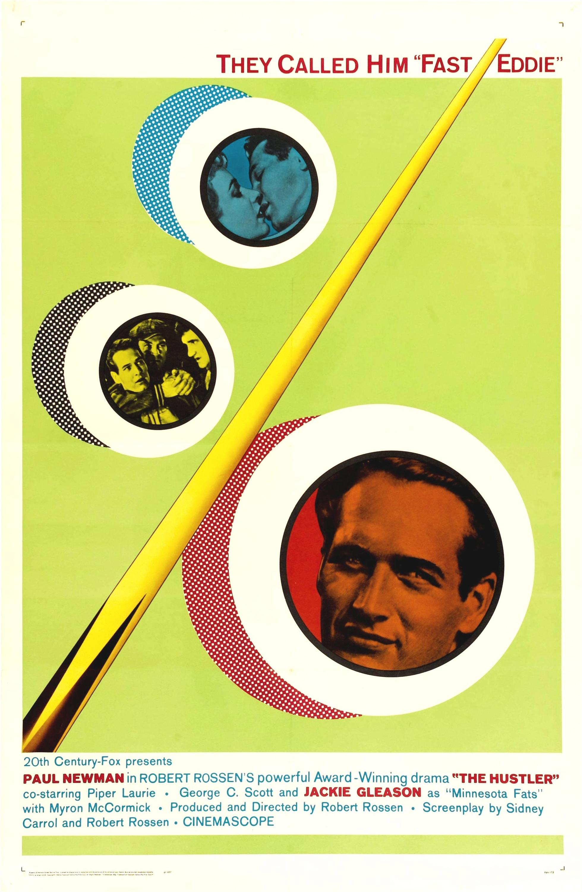

The Hustler
34th Academy Awards
(Oscars 1962)
9 Nominations, 2 Awards
| Nominations | ||
|---|---|---|
| Category | Nominees | Result |
| Best Motion Picture | Robert Rossen | Nominated |
| Actor | Paul Newman | Nominated |
| Actress | Piper Laurie | Nominated |
| Actor in a Supporting Role | George C. Scott | Nominated |
| Actor in a Supporting Role | Jackie Gleason | Nominated |
| Directing | Robert Rossen | Nominated |
| Writing (Screenplay--based on material from another medium) | Robert Rossen and Sidney Carroll | Nominated |
| Cinematography (Black-and-White) | Eugen Shuftan | Won |
| Art Direction (Black-and-White) | Gene Callahan and Harry Horner | Won |